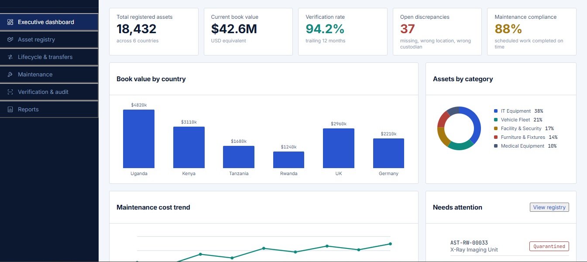

Alfa-Assets: one project, five disciplines
Alfa-Assets is an enterprise asset lifecycle platform we designed and built to work through one real problem, tracking physical assets from acquisition to disposal, across the full stack of skills that problem actually requires. Rather than five separate portfolio pieces, this is one system, and each part of it was a deliberate exercise in a different discipline.
Below is how the same project breaks down.

Software Development
Full-stack products built for scale; from first prototype to a release your users depend on every day. We work across web, mobile and backend systems, integrating cleanly with whatever you already run.
- Product & platform engineering
- API & systems integration
- Cloud-native backends
- Ongoing maintenance & support
Building the system that runs the lifecycle.
Alfa-Assets is a working application, not a set of mockups: a React frontend with a real component and state model, backed by a FastAPI service implementing the asset lifecycle as an explicit state machine: Draft, Assigned, Under Maintenance, Retired, Disposed, and the exception states (Lost, Damaged, Quarantined) alongside them. The transfer and approval workflow is enforced in code, not just drawn on a screen.
What this shows:- A documented, versioned REST API (OpenAPI spec)
- A lifecycle state machine with enforced transitions and audit hooks
- Automated tests and a CI/CD pipeline, not manual QA
- A design system built for the subject matter, not a template
Data Analytics
Turning raw data into decisions; dashboards, models and reporting your team will actually open. We build analytics that match how your business actually makes decisions, not a generic template.
- Business intelligence dashboards
- Predictive & statistical modelling
- Self-serve reporting
- KPI & metrics frameworks
Turning asset history into decisions.
The executive dashboard isn't a generic chart wall; every metric on it answers a specific operational question: what's the verification rate, where is maintenance cost accelerating, which assets are overdue for replacement. That last one runs on a transparent scoring model combining age, maintenance cost, failure frequency, utilization, warranty status, and business criticality, deliberately explainable rather than a black box, so a finance officer can see why an asset is flagged.
What this shows:- KPIs chosen for what they let someone decide, not just what's easy to chart
- A documented, interpretable scoring model instead of an opaque prediction
- Written analysis alongside the visuals: what the data actually shows, not just how it's displayed
Data Engineering
Pipelines and infrastructure that move data reliably, so everything built on top of it can be trusted. We design for the volume and velocity you'll have in two years, not just today.
- ETL / ELT pipeline design
- Data warehousing & lakes
- Real-time streaming
- Data quality & governance
Getting asset history out of the transactional database and into something you can actually analyze.
The operational database handles transactions. A separate pipeline (dbt models feeding an orchestrated DAG) moves lifecycle events, maintenance records, and verification outcomes into a warehouse built around a star schema: asset, category, location, department, and date as dimensions; transactions, maintenance, and verification as facts.
What this shows:- A working ELT pipeline, not just a diagram of one
- A deliberately separated analytical layer, so dashboards never run against production
- A schema designed to answer real questions (utilization, replacement risk, maintenance cost by site) rather than just mirror the source tables
Architecture
System design that holds up under load; documented, deliberate, and built to change without breaking. We map the constraints before we pick a stack.
- System & solution architecture
- Legacy modernization
- Scalability & performance planning
- Technical documentation
Deciding how the system should be shaped, and why.
The architecture choices are documented as decisions, not defaults. We chose a modular monolith over microservices for the first release and wrote the reasoning down as an ADR. The platform is designed for multi-tenancy from day one, with isolation enforced at the data layer, and for three deployment modes (SaaS, private-cloud, and on-premise) from a single codebase, because the organizations this is built for (banks, hospitals, NGOs) don't all want the same one.
What this shows:- Architecture Decision Records for the calls that matter (data model, tenancy, deployment)
- A system designed for offline field use: mobile verification with local queues and conflict resolution, built for real connectivity constraints rather than assumed always-online
- A clear boundary between operational and analytical workloads
Cybersecurity
Threat modelling, hardening and response; security designed into the system, not bolted on afterward. The same team that builds your systems is the one defending them.
- Threat modelling & risk assessment
- Security architecture & hardening
- Monitoring & incident response
- Compliance readiness
Making the audit trail trustworthy, not just present.
Every privileged action (an approval, a transfer, a disposal) is written to an append-only, tamper-evident audit log. Access is controlled with OIDC/OAuth2, RBAC, and MFA on sensitive actions, with tenant isolation enforced at the application boundary as well as the data layer. The design started from a short threat model of the highest-risk flows (asset transfer, field verification) before any of it was built.
What this shows:- A written threat model for the flows that matter most
- Authentication and access control actually wired into the login and approval paths, not described in a slide
- Tamper-evident logging that can be independently verified
- Clean SAST and dependency scans running in CI
Have a project in one of these areas?
Tell us what you're building. We'll reply within one working day with next steps, not a sales call.